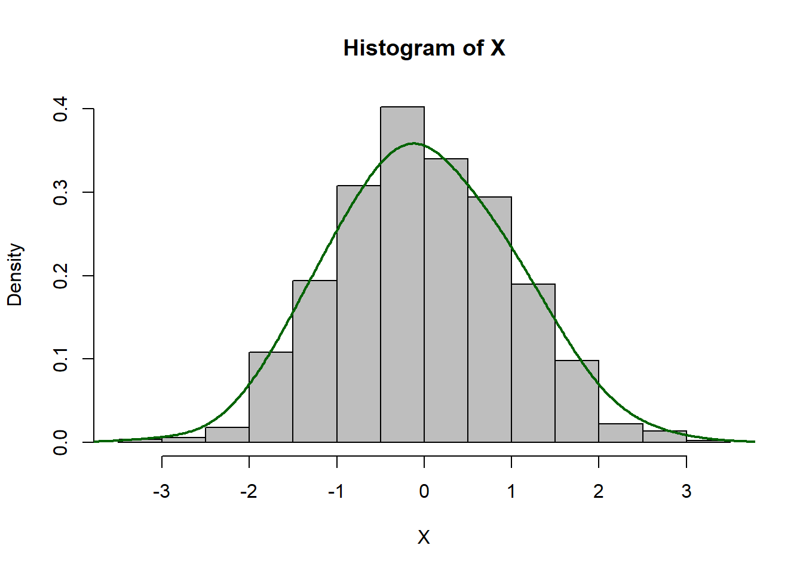

Module 4 Probability Concepts
In previous modules, we discussed ways to describe variables and the relationships between them. From here, we want to start asking inferential statistics questions like “If my sample mean is 10, how likely is it that the population mean is actually 11?”. Probability is going to start us on this path.
Probability theory is the science of uncertainty and it is really interesting! But it can also be pretty challenging. I try to frame probability around things most of us can do at home: flipping a coin, rolling a die, drawing from a deck of cards. You certainly don’t need any of these things to get through this module, but you may find it helpful to have a coin/die/deck of cards on hand as you read through the examples.
Take your time running practice problems and going through the examples, using a tactile approach like sorting through your deck of cards whenever it seems helpful.
Module Learning Objectives/Outcomes
- Find and interpret probabilities for equally likely events.
- Find and interpret probabilities for events that are not equally likely.
- Find and interpret joint and marginal probabilities.
- Find and interpret conditional probabilities.
- Use the multiplication rule and independence to calculate probabilities.
R Objectives: none
This module’s outcomes correspond to course outcome (3) understand the basic rules of probability.
4.1 Experiments, Sample Spaces, and Events
Probability is the science of uncertainty. When we run an experiment, we are unsure of what the outcome will be. Because of this uncertainty, we say an experiment is a random process.
The probability of an event is the proportion of times it would occur if the experiment were run infinitely many times. For a collection of equally likely events, this looks like: \[ \text{probability of event} = \frac{\text{number of ways event can occur}}{\text{number of possible (unique) outcomes}} \]
An event is some specified possible outcome (or collection of outcomes) we are interested in observing.
Example: If you want to roll a 6 on a six-sided die, there are six possible outcomes \(\{1,2,3,4,5,6\}\). In general, we assume that each die face is equally likely to appear on a single roll of the die, that is, that the die is fair. So the probability of rolling a 6 is \[\frac{\text{number of ways to roll a 6}}{\text{number of possible rolls}} = \frac{1}{6}\]
Example: We can extend this to a collection of events, say the probability of rolling a 5 or a 6: \[\frac{\text{number of ways to roll a 5 or 6}}{\text{number of possible rolls}} = \frac{2}{6}\]
The collection of all possible outcomes is called a sample space, denoted \(S\). For the six-sided die, \(S=\{1,2,3,4,5,6\}\).
To simplify our writing, we use probability notation:
- Events are assigned capital letters.
- \(P(A)\) denotes the probability of event \(A\).
- Sometimes we will also shorten simple events to just a number. For example, \(P(1)\) might represent “the probability of rolling a 1”.
We can estimate probabilities from a sample using a frequency distribution.
Example: Consider the following frequency distribution from Module 1
Class Frequency freshman 12 sophomore 10 junior 3 senior 5 If a student is selected at random (meaning each student is equally likely to be selected), the probability of selecting a sophomore is \[\text{probability of sophomore} = \frac{\text{number of ways to select a sophomore}}{\text{total number of students}} = \frac{10}{30} \approx 0.3333\] The probability of selecting a junior or a senior is \[\frac{\text{number of ways to select a junior or senior}}{\text{total number of students}} = \frac{3+5}{30} = \frac{8}{30} \approx 0.2667\]
Using probability notation, we might let \(A\) be the event we selected a junior and \(B\) be the event we selected a senior. Then \[P(A \text{ or } B) = 0.2667\]
Section Exercises
- Suppose you’re playing a game and need to roll a 17 or higher on a 20-sided die for your next action to be successful.
- What is the sample space?
- What is the probability of rolling a 17 or higher?
- Consider again frequency distribution from Module 1
| Class | Frequency |
|---|---|
| freshman | 12 |
| sophomore | 10 |
| junior | 3 |
| senior | 5 |
- For a student selected at random from this course, what is the probability they are a senior?
- What is the probability they are not a senior?
4.2 Probability Distributions
Two outcomes are disjoint or mutually exclusive if they cannot both happen (at the same time). Think back to how we developed bins for histograms - the bins need to be nonoverlapping - this is the same idea!
Example: If I roll a six-sided die one time, rolling a 5 and rolling a 6 are disjoint. I can get a 5 or a 6, but not both on the same roll.
Example: If I select a student, they can be a freshman or a sophomore, but that student cannot be both a freshman and a sophomore at the same time.
The outcome must be one event or the other (it cannot be both at the same time).
4.2.1 Venn Diagrams
Venn Diagrams show events as circles. The circles overlap where events share common outcomes.

When a Venn Diagram has no overlap the events are mutually exclusive. This Venn Diagram shows the event “Draw a Diamond” and the event “Draw a Face Card”. There are 13 diamonds and 12 face cards in a deck. In this case, the events are not mutually exclusive: it’s possible to draw both a diamond and a face card at the same time: the Jack of Diamonds, Queen of Diamonds, and King of Diamonds.

The “face cards” are the Jacks, Queens, and Kings. Each row represents a “suit”. From top to bottom, the suits are clubs, spades, hearts, and diamonds. Cards can be either red (hearts and diamonds) or black (spades and clubs).
We can also use Venn Diagrams to visualize the relationships between events.

If \(A\) and \(B\) are disjoint, this looks like

Notice that in this case there is no shading for \(A\) and \(B\) because they cannot both happen!
4.2.2 Probability Axioms
A probability distribution lists all possible disjoint outcomes (think: all possible values of a variable) and their associated probabilities. This can be in the form of a table
| Roll of a six-sided die | 1 | 2 | 3 | 4 | 5 | 6 |
|---|---|---|---|---|---|---|
| Probability | 1/6 | 1/6 | 1/6 | 1/6 | 1/6 | 1/6 |
(note that we could visualize this with a bar plot!) or an equation, which we will discuss in a later module.
The probability axioms are requirements for a valid probability distribution. They are:
- All listed outcomes must be disjoint.
- Each probability must be between 0 and 1.
- The probabilities must sum to 1.
Note that #2 is true for ALL probabilities. If you ever calculate a probability and get a negative number or a number greater than 1, you know something went wrong!
Example: Use the probability axioms to check whether the following tables are probability distributions.
X {1 or 2} {3 or 4} {5 or 6} P(X) 1/3 1/3 1/3 Each axiom is satisfied, so this is a valid probability distribution.
Y {1 or 2} {2 or 3} {3 or 4} {5 or 6} P(Y) 1/3 1/3 1/3 -1/3 In this case, the outcomes are not disjoint and one of the probabilities is negative, so this is not a valid probability distribution.
Probability distributions look a lot like relative frequency distributions. This isn’t a coincidence! In fact, a relative frequency distribution is a good way to use data to approximate a probability distribution.
Section Exercises
- Consider events \(A\): “Draw a spade”, \(B\): “Draw a queen”, and \(C\): “Draw a red”. Which of these events are mutually exclusive?
- Use the probability axioms to determine whether each of the following is a valid probability distribution:
x 0 1 2 3 P(x) 0.1 0.2 0.1 0.3 x 0 or 1 1 or 2 3 or 4 5 or 6 P(x) 0.1 0.2 0.4 0.3 - Determine whether the following events are mutually exclusive (disjoint).
- Your friend studies in the library. You study at home.
- You and your study group all earn As on an exam.
- You stay out until 3 am. You go to bed at 9 pm.
- In a group of 24 people, 13 have cats and 15 have dogs. Four of them have both cats and dogs. Sketch a Venn Diagram for these events.
4.3 Rules of Probability
Consider a six-sided die. \[P(\text{roll a 1 or 2}) = \frac{\text{2 ways}}{\text{6 outcomes}} = \frac{1}{3}.\] Notice that we get the same result by taking \[P(\text{roll a 1})+P(\text{roll a 2}) = \frac{1}{6}+\frac{1}{6} = \frac{1}{3}.\] It turns out this is widely applicable!
4.3.1 Addition Rules
If \(A\) and \(B\) are disjoint outcomes, then the probability that one of them occurs is \[P(A\text{ or } B) = P(A)+P(B).\] This can also be extended to more than two disjoint outcomes: \[P(A \text{ or } B \text{ or } C \text{ or } \dots ) = P(A)+P(B)+P(C) + \dots\] where we add up all of their individual probabilities.
Example:
Class Frequency freshman 12 sophomore 10 junior 3 senior 5 In a previous example, we found that \[P(\text{junior or senior}) = \frac{3+5}{30} = \frac{8}{30}\]
Using the Addition Rule for Disjoint Outcomes, we get \[P(\text{junior})+P(\text{senior}) = \frac{3}{30} + \frac{5}{30} = \frac{8}{30}\]
Essentially, the Addition Rule for Disjoint Outcomes is just breaking up that fraction: \(\frac{3+5}{30}\) (3 juniors plus 5 seniors out of 30 students) represents the same thing as \(\frac{3}{30} + \frac{5}{30}\) (3 juniors out of 30 students plus 5 seniors out of 30 students).
Now consider a deck of cards. Let \(A\) be the event that a card drawn is a diamond and let \(B\) be the event it is a face card. (Check back to 3.2 for the Venn Diagram of these events.)
- \(A\): \(\quad 2\diamondsuit\) \(3\diamondsuit\) \(4\diamondsuit\) \(5\diamondsuit\) \(6\diamondsuit\) \(7\diamondsuit\) \(8\diamondsuit\) \(9\diamondsuit\) \(10\diamondsuit\) \(J\diamondsuit\) \(Q\diamondsuit\) \(K\diamondsuit\) \(A\diamondsuit\)
- \(B\): \(\quad J\heartsuit\) \(Q\heartsuit\) \(K\heartsuit\) \(J\clubsuit\) \(Q\clubsuit\) \(K\clubsuit\) \(J\diamondsuit\) \(Q\diamondsuit\) \(K\diamondsuit\) \(J\spadesuit\) \(Q\spadesuit\) \(K\spadesuit\)
The collection of cards that are diamonds or face cards (or both) is
Looking at these cards, I can see that there are 22 of them, so \[P(A \text{ or } B) = \frac{22}{52}\]
However, if I try to apply the addition rule for disjoint outcomes, \(P(A)=\frac{13}{52}\) and \(P(B)=\frac{12}{52}\) and I would get \(\frac{13+15}{52} = \frac{25}{52}\), which isn’t what we want!
What happened? When I tried to add these, I double counted the Jack of Diamonds, Queen of Diamonds, and King of Diamonds (the cards that are in both \(A\) and \(B\)). To deal with that, I need to subtract off the double count \(\frac{13}{52}+\frac{12}{52}-\frac{3}{52}\).
For any two events \(A\) and \(B\), the probability that at least one will occur is \[P(A \text{ or } B) = P(A)+P(B)-P(A \text{ and }B).\]
Because \(A\) and \(B\) are just placeholders for some events, \(P(A \text{ or } B) = P(B \text{ or } A)\).
Notice that when we say “or”, we include the situations where A is true, B is true, and the situation where are both A and B are true. This is an inclusive or. Basically, if I said “Do you like cats or dogs?” and you said “Yes.” because you like cats and dogs, that would be a perfectly valid response. I recommend using the inclusive or with your friends any time you want to get out of making a decision.
Also notice that the general addition rule applies to any two events, even disjoint events. This is because, for disjoint events, \(P(A \text{ and } B) = 0\); it’s impossible for both to occur at the same time!
4.3.2 Contingency Tables
A contingency table is a way to summarize bivariate data, or data from two variables.
Smallpox in Boston (1726)|
|
Inoculated |
|||
|
|
yes |
no |
total |
|
|
Result |
lived |
238 |
5136 |
5374 |
|
died |
6 |
844 |
850 |
|
|
total |
244 |
5980 |
6224 |
|
- 5136 is the count of people who lived AND were not inoculated.
- 6224 is the total number of observations.
- 244 is the total number of people who were inoculated.
- 5374 is the total number of people who lived.
This is basically a two-variable frequency distribution. And, like a frequency distribution, we can convert to proportions (relative frequencies) by dividing each count (each number) by the total number of observations:
|
|
Inoculated |
|||
|
|
yes |
no |
total |
|
|
Result |
lived |
0.0382 |
0.8252 |
0.8634 |
|
died |
0.0010 |
0.1356 |
0.1366 |
|
|
total |
0.0392 |
0.9608 |
1.0000 |
|
- 0.8252 is the proportion of people who lived AND were not inoculated.
- 1.000 is the proportion of total number of observations. Think of this as 100% of the observations.
- 0.0392 is the proportion of people who were inoculated.
- 0.8634 is the proportion of people who lived.
The row and column totals are marginal probabilities. The probability of two events together (\(A\) and \(B\)) is a joint probability.
If we separate out the marginal probabilities, we get the relative frequency distribution for that variable.
| Result | Proportion |
| lived | 0.8634 |
| died | 0.1366 |
Example: Find the probability an individual was inoculated or lived.
Let \(A\) be the event that inoculated = yes and let \(B\) be the event that result = lived. Then \(P(A) = 0.0392\) and \(P(B) = 0.8632\).
We know these events are not disjoint, since there are 238 people who both lived and were inoculated (so clearly it is possible for both to be true at once).
Since they are not disjoint, we use the addition rule for disjoint outcomes. \[P(A \text{ or } B) = P(A) + P(B) - P(A \text{ and } B)\] We can find \(P(A \text{ and } B)\) from the table where the two events overlap: \(P(A \text{ and } B) = 0.0382\) So then \[P(A \text{ or } B) = 0.0392 + 0.8634 - 0.0382 = 0.8644\] That is, the probability an individual was incolated or lived is 0.8644.
Aside: the history of the 1721 smallpox epidemic in Boston is super interesting! You can read a bit more about it here.
4.3.3 Complements
The complement of an event is all of the outcomes in the sample space that are not in the event. For an event \(A\), we denote its complement by \(A^c\).
Example: For a single roll of a six-sided die, the sample space is all possible rolls: 1, 2, 3, 4, 5, or 6. If the event \(A\) is rolling a 1 or a 2, then the complement of this event, denoted \(A^c\), is rolling a 3, 4, 5, or 6.
We could also write this in probability notation: \(S = \{1, 2, 3, 4, 5, 6\}\) and if \(A=\{1,2\}\), then \(A^c=\{3, 4, 5, 6\}\).
Property: \[P(A \text{ or } A^c)=1\] Using the addition rule, \[P(A \text{ or } A^c) = P(A)+P(A^c) = 1.\] Make sure you can convince yourself that \(A\) and \(A^c\) are always disjoint.
\[P(A) = 1-P(A^c).\]
Example: Consider rolling 2 six-sided dice and taking their sum. The event of interest is a sum less than 12. Find
- \(A^c\)
- \(P(A^c)\)
- \(P(A)\)
If \(A =\) (sum less than 12), then \(A^c =\) (sum greater than or equal to 12). Take a moment to notice that there is only one way to get a sum greater than or equal to 12: rolling two 6s.
The chart below shows the rolls of Die 1 as columns and the rolls for Die 2 as rows. The numbers in the middle are the sums. Note that there are 36 possible ways to roll 2 dice.
1 2 3 4 5 6 1 2 3 4 5 6 7 2 3 4 5 6 7 8 3 4 5 6 7 8 9 4 5 6 7 8 9 10 5 6 7 8 9 10 11 6 7 8 9 10 11 12 Even without the chart, by noting that there’s only one way to get a sum greater than or equal to 12, we can quickly find \(P(A^C)\): \[ P(A^c) = \frac{1}{36}\] But trying to count all of the ways to get \(A\) would take a long time! Instead, we can use \[P(A) = 1 - P(A^c) = 1-\frac{1}{36} = \frac{35}{36}\]
Section Exercises
- Consider rolling two four-sided dice and taking their sum.
- Find the probability that the sum is 7 or 8.
- Find the probability that the sum is less than 8.
- Let \(A\) be the event that the sum is 8.
- Find \(P(A)\).
- Describe the event \(A^c\)?
- Find \(P(A^c)\).
- Consider a deck of cards (there’s an image in Section 4.2.1). If you randomly draw a single card from the deck, what is the probability that it is a Queen or a Heart?
- Suppose you are playing a game that requires you to roll twenty-sided dice. We are interested in the setting where you roll two of these dice (call them red and blue) and take the highest of the two rolls. We want to find the probability that your highest roll is at least a \(17\).
- Let \(A\) be the event that red is at least a \(17\). Then, find \(P(A)\).
- Let \(B\) be the probability that blue is at least \(17\). What is \(P(B)\)?
- How can we rewrite “the probability that your highest roll is at least a \(17\)” in terms of \(A\) and \(B\)? Hint: What needs to happen with red and blue for your highest roll to be at least a 17?
- Find the probability that your highest roll is at least a 17.
4.4 Conditional Probability
Let’s return to our data on smallpox in Boston. We had the initial contingency table.
|
|
Inoculated |
|||
|
|
yes |
no |
total |
|
|
Result |
lived |
238 |
5136 |
5374 |
|
died |
6 |
844 |
850 |
|
|
total |
244 |
5980 |
6224 |
|
and the relatively frequency version.
|
|
Inoculated |
|||
|
|
yes |
no |
total |
|
|
Result |
lived |
0.0382 |
0.8252 |
0.8634 |
|
died |
0.0010 |
0.1356 |
0.1366 |
|
|
total |
0.0392 |
0.9608 |
1.0000 |
|
What can we learn about the result of smallpox if we already know something about inoculation status? For example, given that a person is inoculated, what is the probability of death? To figure this out, we restrict our attention to the 244 inoculated cases. Of these, 6 died. So the probability is 6/244.
This is called conditional probability, the probability of some event \(A\) if we know that event \(B\) occurred (or is true): \[P(A|B) = \frac{P(A\text{ and }B)}{P(B)}\] where the symbol | is read as “given”.
Example: For death given inoculation, \[P(\text{death}|\text{inoculation}) = \frac{P(\text{death and inoculation})}{P(\text{inoculation})} = \frac{0.0010}{0.0392} = 0.0255.\] Notice that we could also write this as \[P(\text{death}|\text{inoculation}) = \frac{P(\text{death and inoculation})}{P(\text{inoculation})} = \frac{6/6224}{244/6224} = \frac{6}{244},\] which is what we found when using the table to restrict our attention to only the inoculated cases.
If knowing whether event \(B\) occurs tells us nothing about event \(A\), the events are independent. For example, if we know that the first flip of a (fair) coin came up heads, that doesn’t tell us anything about what will happen next time we flip that coin.
We can test for independence by checking if \(P(A|B)=P(A)\).
4.4.1 Multiplication Rules
If \(A\) and \(B\) are independent events, then \[P(A \text{ and }B) = P(A)P(B).\]
We can extend this to more than two events: \[P(A \text{ and }B \text{ and } C \text{ and } \dots) = P(A)P(B)P(C)\dots.\]
Note that if \(P(A \text{ and }B) \ne P(A)P(B)\), then \(A\) and \(B\) are not independent.
Example: Find the probability of rolling a \(6\) on your first roll of a die and a \(6\) on your second roll.
Let \(A=\) (rolling a \(6\) on first roll) and \(B=\) (rolling a \(6\) on second roll). For each roll, the probabiltiy of getting a \(6\) is \(1/6\), so \(P(A) = \frac{1}{6}\) and \(P(B) = \frac{1}{6}\).
Then, because each roll is independent of any other rolls, \[P(A \text{ and }B) = P(A)P(B) = \frac{1}{6}\times\frac{1}{6} = \frac{1}{36}\]
If \(A\) and \(B\) are any two events, then \[P(A \text{ and }B) = P(A|B)P(B).\]
Because \(A\) and \(B\) are just placeholders for some events, \(P(A \text{ and } B) = P(B \text{ and } A)\).
Notice that this is just the conditional probability formula, rewritten in terms of \(P(A \text{ and }B)\)!
Example: Suppose we know that 45.5% of US households have dogs and that among those with dogs, 12.1% have cats. Find the probability that a US household has both dogs and cats.
Let \(C=\) (household has cats) and \(D=\) (household has dogs). Since 45.5% of US households have dogs, if I randomly select a household, 45.5% of the time that household will have dogs. Thus, \(P(D) = 0.455\).
The other piece tells us something about the probability of having cats among those with dogs. This means that we know that these people have dogs. That is, given a household has dogs, the probability of cats is 12.1%. In probability notation, \(P(C|D) = 0.121\). Then \[P(C \text{ and }D) = P(C|D)P(D) = 0.121\times 0.455 = 0.055\] or the probability that a US household has both cats and dogs is 0.055.
We can put our idea of independence together with our multiplication rules to come up with three ways to test for independence:
- \(P(A|B)=P(A)\)
- \(P(B|A)=P(B)\)
- \(P(A \text{ and }B) = P(A)P(B)\)
These are all mathematically equivalent, so you only need to check one. If the equation holds (they are equal), then \(A\) and \(B\) are independent. If they are not equal, the events are dependent.
Any time we want to determine whether two events are independent, we need to do one of these tests! That is, we should not rely solely on our intuition to determine if events are independent.
Example: Suppose, in addition to the information from the previous example, that 32.1% of US households have cats. For US households, are having cats and having dogs independent events?
Now we can include the information \(P(C) = 0.321\). We know from the previous example that \(P(C|D) = 0.121\), so it will be convenient to test \[P(C|D) \stackrel{?}{=} P(C)\] (That question mark means we aren’t sure yet if those two things are equal!) In this case \[ P(C|D) = 0.121 \ne P(C) = 0.321 \] so they are dependent.
4.4.2 Law of Total Probability
We observed in the last section that we can get a marginal probability by adding up all of its associated joint probabilities in a contingency table.
|
|
Inoculated |
|||
|
|
yes |
no |
total |
|
|
Result |
lived |
0.0382 |
0.8252 |
0.8634 |
|
died |
0.0010 |
0.1356 |
0.1366 |
|
|
total |
0.0392 |
0.9608 |
1.0000 |
|
That is, \[ P(\text{lived}) = P(\text{lived and inoculated}) + P(\text{lived and not inoculated}) \]
We can generalize this for some event \(A\) and some variable \(X\) whose \(k\) possible outcomes can be listed as (mutually exclusive) events \(B_1, B_2, \dots B_k\). Then \[P(A) = P(A \text{ and }B_1) + P(A \text{ and }B_2) + \dots + P(A \text{ and }B_k) \] Using our General Multiplication Rule, we have \(P(A \text{ and }B) = P(A|B)P(B)\), so we can rewrite this as \[P(A) = P(A|B_1)P(B_1) + P(A|B_2)P(B_2) + \dots + P(A|B_k)P(B_k) \]
4.4.3 Bayes’ Theorem
Sometimes, we get some additional information about a probability and we want to update our understanding based on this new information. This the basic idea behind Bayes’ Theorem.
Our conditional probability rule states that \[P(A|B) = \frac{P(A \text{ and } B)}{P(B)}\] and our multiplication rule that \[P(A \text{ and } B) = P(B \text{ and } A) = P(B|A)P(A)\] Putting these together (by substituting \(P(B|A)P(A)\) in for \(P(A \text{ and } B)\) in the conditional probability rule) gives us one last probability rule.
If \(A\) and \(B\) are any two events such that \(P(B)\ne0\), then \[P(A|B) = \frac{P(B|A)P(A)}{P(B)}\]
Example: Consider a test for some rare disease. If you have the disease, this test accurately identifies it 99% of the time. Suppose 0.5% of the population has this disease and the test results in a positive result 8% of the time. . Given a positive test result, what’s the probability a person actually has the disease?
Solution: Let’s start by assigning some probabilities to events. Let \(D\) be the event a person has the disease and let \(T\) be the probability the test is positive. From the prompt, we know that \(P(D) = 0.005\) (0.5% of the population has the disease) and \(P(T) = 0.08\) (the test gives a positive result 8% of the time).
The other probabilities represent the test being accurate given some disease status. That is, given a person has the disease, the test will be positive 99% of the time: \(P(T|D) = 0.99\).
We want to know the probability of disease given positive test, \(P(D|T)\). Using Bayes’ Theorem, \[P(D|T) = \frac{P(T|D)P(D)}{P(T)} = \frac{0.99\times0.005}{0.08} = 0.062\]
So if a person gets a positive result, they actually only have a 0.062 probability of having the disease (even though the test is very accurate!).
This may all seem a bit counterintuitive. The probability of disease given positive result seems really low! That’s because most people who actually get tested have some reason to suspect they have the disease. If doctors started testing absolutely everyone, we would probably see a lot more false positives. This is why we typically only do routine screening for things like cancer for people who are already at risk.
The Monty Hall Problem
This is a neat problem with an unexpected result. This is a brain teaser based loosely on the game show Let’s Make a Deal hosted at that time by Monty Hall. The problem is as follows:
Suppose you are participating in a game show where you are given the choice of one of three doors. Behind one of the doors is a prize. The other two doors have nothing behind them. After you choose a door, the host opens one of the other two doors, which always has nothing behind it. He then asks if you want to stick with your original door, or switch to the other unopened door. What should you do? Does it matter?
Most people’s instinct is that it does not matter and that, after the host opens the door, there is a 50% chance of winning the prize either way. However, this problem turns out to be a little more complicated than that.
This time, let’s start with the answer: you should switch doors. In fact, after the host has opened the door, the probability that the prize is behind your original door is \(1/3\), but the probability of its being behind the other unopened door is \(2/3\)!
The host must show you a door with nothing behind it, and he must open one of the doors you did not select, so he is not choosing this door at random. That impacts what you should do.
Hard to believe? We can set this up using a table or with Bayes’ Theorem. Let’s start with the table. Suppose you initially selected Door 1.
| Behind door 1 | Behind door 2 | Behind door 3 | Result of staying | Result of switching |
|---|---|---|---|---|
| nothing | nothing | prize | loses | wins |
| nothing | prize | nothing | loses | wins |
| prize | nothing | nothing | wins | loses |
Looking under “Result of staying”, we can see we would lose 2/3 of the time (and we win 2/3 of the time if we switch)!
We will also demonstrate this using Bayes’ Theorem. Suppose again you start with Door 1. Let \(A_i\) be the event that the prize is behind Door \(i\). Then, without knowing anything else, \(P(A_1) = P(A_2) = P(A_3) = 1/3\) since there are three doors.
We will let \(D\) be the event the host opened Door \(2\).
To get into \(P(D)\), we need our Law of Total Probability. We selected Door 1, so
- if the prize is behind Door 1, the host will randomly select between Door 2 and Door 3. That is, \(P(D | A_1) = \frac{1}{2}\).
- if the prize is behind Door 2, the host will always show us Door 3. That is, \(P(D | A_2) = 0\).
- if the prize is behind Door 3, the host will always show us Door 2. That is, \(P(D | A_3) = 1\).
So \[ \begin{aligned} P(D) &= P(D|A_1)P(A_1) + P(D|A_2)P(A_2) + P(D|A_3)P(A_3) \\ &= \frac{1}{2}\times\frac{1}{3} + 0\times\frac{1}{3} + 1\times\frac{1}{3} \\ &= \frac{1}{2} \end{aligned} \]
Then the probability the prize is behind Door 1 (the one we selected), given the host opened Door 2, is \[P(A_1|D) = \frac{P(D|A_1)P(A_1)}{P(D)} = \frac{1/2\times1/3}{1/2} = \frac{1}{3}\] So if we stay, we have a 0.3333 chance of winning. Similarly, the probability the prize is behind Door 3, given the host opened Door 2, is \[P(A_3|D) = \frac{P(D|A_3)P(A_3)}{P(D)} = \frac{1\times1/3}{1/2} = \frac{1}{3} = \frac{2}{3}\] So if we switch, we have a 0.6667 change of winning.
Section Exercises
- For the following conditional probability scenarios, determine the condition and the outcome of interest.
- We want to find the probability that a randomly chosen student is enrolled in Stat 1, given that they are a health sciences major.
- Knowing that a person texts while driving, we will find the probability that they got a speeding ticket in 2023.
- We have data on the type of car people bought and on what additional features they purchased. We will find the probability that a randomly selected sports car buyer also bought bucket seats.
- We have data on sex and paw preference for dogs. We will find the probability that a female dog is left-pawed.
- Using the contingency table, find the indicated probabilities.
- \(P(A\) and \(B2)\)
- \(P(B2)\)
- \(P(A)\)
- \(P(A|B2)\)
- \(P(B2|A)\)
- The following contingency table represents a sample of households asked about whether they had children and whether they had pets. Use the table to answer the following questions.
- Find the probability that a household has pets.
- Find the probability a household has pets and has children.
- Knowing that a household has children, find the probability they have pets.
- Are having children and having pets independent events? Explain.
- If \(A\) and \(B\) are disjoint events, what can we say about whether they are independent? Hint: think about how disjoint events will impact our tests for independence.
| \(A\) | \(A^c\) | Total | |
|---|---|---|---|
| \(B1\) | 0.31 | 0.05 | 0.36 |
| \(B2\) | 0.11 | 0.13 | 0.24 |
| \(B3\) | 0.08 | 0.32 | 0.40 |
| Total | 0.5 | 0.5 | 1.00 |
| Children | No children | Total | |
|---|---|---|---|
| Pets | 38 | 47 | 85 |
| No pets | 21 | 44 | 65 |
| Total | 59 | 91 | 150 |